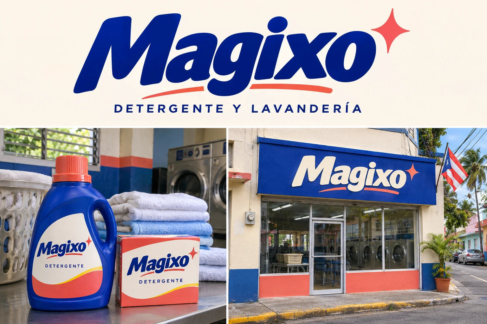
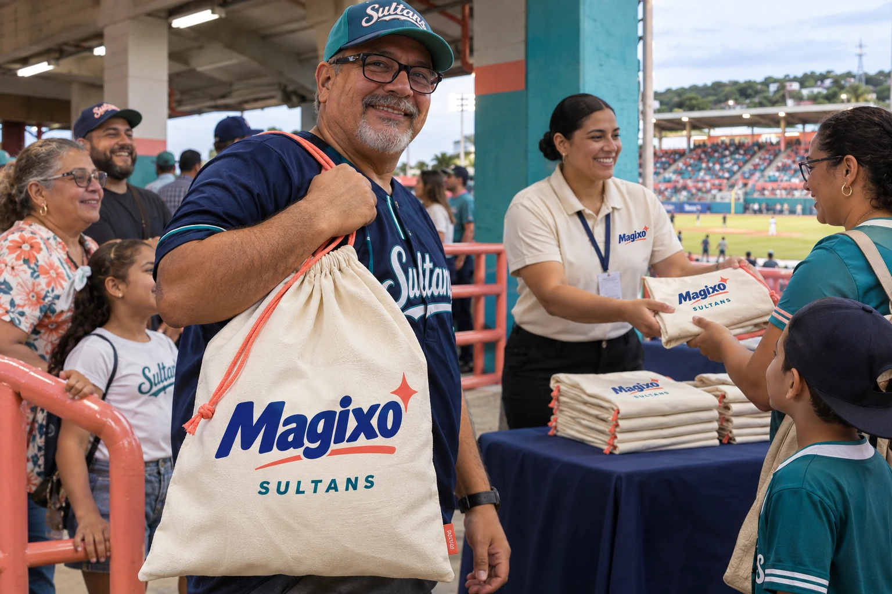
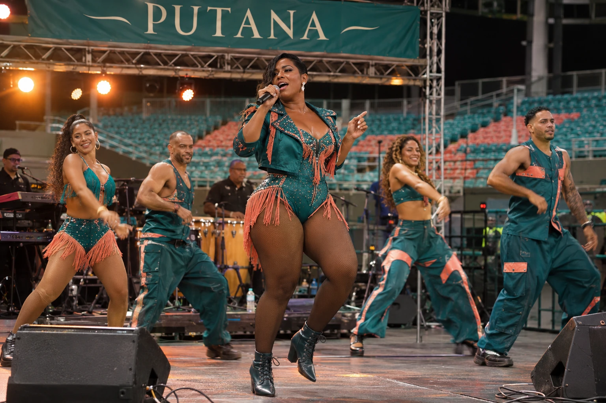
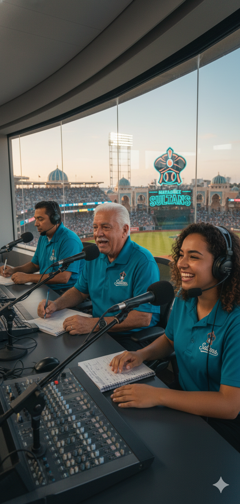

The Salt Court, presented by Magixo · Mayagüez, Puerto Rico
Season snapshot
2026 season · As of 2026-10-13
88–74Record
.543Win %
592Runs
538Allowed
+54Difference
The Sultans play at the Salt Court, where concrete stands face the waterfront and teal rails carry the club’s coral trim. Magixo’s signs sit above the stands; the brand’s neighborhood laundries supply the cloth bags on giveaway nights.
Claim a card and add content to make it your own! Player cards and other artifacts across GLB can be claimed, curated and crafted by you. Look for unclaimed artifacts, click to claim, craft your submission, and send it to the GLB Board for review. If accepted, you’ll receive a private 16-character claim code, and we’ll publish the artifact with your content and attribution to the User ID you provide. Explore Claim & Create → Select a card to flip it over.
Warm concrete, painted rails and an open view toward the water. Sea air moves through the stand as the floodlights come on. The Sultans’ teal and coral remain around the bowl; Magixo’s cobalt signs carry the name above the seats.
The park keeps its name. At the gate and on the scorecard, it reads The Salt Court, presented by Magixo.
Magixo

Detergente y lavandería
From the shelf to the folding table
Magixo makes detergent and runs neighborhood laundries. The same cobalt lettering appears on the bottle by the washing machine and the sign over the door. Coral panels, ivory labels and a small sparkle travel with it.
The shops handle family wash, work shirts and the occasional Sultans uniform brought in by someone who insists it belongs to a cousin.
Around Mayagüez
Something to talk about while it dries
A radio carries the game between wash cycles. On home dates, customers compare the lineup while sorting clothes; after the last out, the conversation moves to whoever left a pen in a pocket.
The bottles, shops, employees and customers all belong to the growing GLB record.
Magixo Laundry Bag Night

Park giveaway · Selected home dates
A bag that comes home with the scorecard
An ivory cotton laundry bag, coral drawstring and cobalt Magixo print, with the Sultans name below. It is large enough for a real load of clothes and folds down for the trip to the park.
The bags are handed out at the concourse table. By the later innings, some hold jackets, some hold souvenirs, and at least one is being used to carry everyone else’s bags.
Dates and distribution details announced with the promotions schedule.
The laundry room
From the clubhouse · Inés Cordero
Inés keeps the trousers.
Magixo’s outfield board promises, “Sale en el lavado.” It comes out in the wash.
Clubhouse laundry manager Inés Cordero keeps a pair of gray uniform trousers beside the folding table. She has washed them three times. A red stripe of infield dirt still runs across one knee. When the local Magixo representative visits, she puts them on top of the clean pile.
He has requested a fresh test. Inés has asked him to slide into second base first.
The stain, the sales visit and Inés’s account are starting points for contributors. There is room for the representative’s side of the story.
Putana

Resident singer & dancer · Concert evenings
The voice carries. The dancers answer.
Putana sings through the choreography, moving from a close microphone phrase into a full-band chorus without leaving the dancers behind. Percussion and keyboards set the pulse; four dancers trade places around her as the rhythm opens up.
A short black bob, teal stagewear, coral fringe and boots that keep time across the boards. Her show has glamour, flirtation and a crowd close enough to answer the chorus. The live band follows her cues through the final stop.
The residency uses the concourse stage on separate concert evenings. The baseball field remains ready for the next game.
DONK
Custom car competition
Driver entry · Mayagüez
Victor Lumelo
Lumelo brings a 1964 Chevrolet Impala two-door hardtop in cobalt blue with an ivory roof, fine coral pinstriping and polished chrome wheels. Magixo’s lettering fills the doors. The long body rises at the front as Victor works the hydraulic switches from the driver’s seat.
A cobalt work shirt, ivory collar and gold-rim glasses. Victor checks the chrome before each run, then folds his cloth back into the same pocket. The crew keeps a Magixo laundry bag for used polishing towels; nobody is allowed to mix them with the clean ones.
DONK operates independently of GLB. Selected events use stadium venues under separate agreements. Height runs take place on a dedicated paved lane, with spectators behind barriers and an official measuring rig beside the car.
Game voices

Marcos Velázquez
Play-by-play. Velázquez keeps the count clear and leaves room for the crowd between pitches.
El Sultán works the rail in teal and coral, stopping for high-fives and a formal bow before moving to the next row. The tall headpiece is visible above the crowd.
Families make space for photographs. The Lantern Section answers his arrival with a short drum phrase.
The Lantern Section
In the stands
Drums, flags and families fill the Lantern Section. A short rhythm begins in one row and moves into the next; the response rises when the Sultans come back to the plate.
The conversation carries through the game, from the batting order to whose Magixo bag has already gone missing.